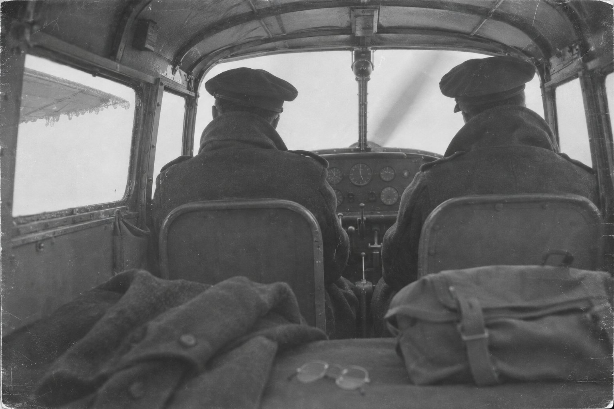

Жить вечно

I
Маленький самолёт сел на аэродром Твинвуд-Фарм под Бедфордом без четверти два пополудни, в пятницу пятнадцатого декабря тысяча девятьсот сорок четвёртого года. Это был «Норсман», канадская одномоторная машина, похожая на летающий грузовик: высокое крыло, тупой нос, кабина, в которой пилоту и двум пассажирам было тесно, а одному было бы скучно. Моторов у «Норсмана» был один. Миллер, стоявший у края поля в шинели и с сумкой в руке, сосчитал их дважды.
Майору Миллеру было сорок лет. Это было видно по тому, как аккуратно он носил очки без оправы и как редели волосы под фуражкой. За последние месяцы он сильно похудел, и шинель сидела на нём так, будто её выдали человеку покрупнее. Он руководил оркестром военно-воздушных сил США, лучшим оркестром из всех, какие у него были, а до войны у него был оркестр, который знала вся Америка. Его пластинки продавали миллионами. Его мелодию «В настроении» насвистывали люди, которые никогда не слышали его фамилии.
Он не любил летать. Он вообще не любил того, что нельзя отрепетировать.
Погода была скверная. Тринадцатого и четырнадцатого рейсы на континент отменили, потому что над Францией висела низкая облачность. Сегодня облака поднялись до двух-трёх тысяч футов, сеялся мелкий дождь, и синоптики обещали обледенение. Над аэродромом стояла серая крыша без единой щели.
Оркестр должен был перебраться в Париж, недавно освобождённый, и играть там для солдат на Рождество. Кто-то должен был лететь вперёд и всё устроить: залы, жильё, радиолинии. Сначала собирались послать Дона Хейнса, его администратора, но потом решили, что лететь должен сам Миллер. Накануне за обедом подполковник Норман Бессел, приятель, человек громкий и весёлый, сказал, что у него завтра свой самолёт до Франции и для Миллера найдётся место. Вечером они втроём поужинали и сыграли в покер. Миллер не помнил, выиграл он или проиграл. Позже у него будет много времени, чтобы вспомнить, и он так и не вспомнит.
Пилот, флайт-офицер Джон Морган, не стал глушить мотор. Бессел забрался на правое переднее сиденье, рядом с ним. Миллеру досталась скамья позади пилота. Он бросил в кабину сумку и остановился на ступеньке. Винт крутился. Миллер огляделся.
— А где, чёрт возьми, парашюты? — крикнул он, перекрывая мотор.
— В чём дело, Миллер? — ответил Бессел. — Вы что, хотите жить вечно?
Миллер засмеялся, потому что так полагалось, и сел. Дон Хейнс, который привёз на аэродром Бессела, стоял внизу и придерживал фуражку.
— Счастливой посадки и удачи! — крикнул Хейнс. — Увидимся завтра в Париже.
Дверь закрылась. Было тринадцать пятьдесят пять. «Норсман» разбежался по мокрой траве, оторвался и ушёл в облака на юг.
Больше его никто не видел.
То есть никто, кроме самого Глена Миллера. Он видел его ещё очень долго.
II
Минут через двадцать после взлёта, а может, через сорок, — часы у Миллера были хорошие, но в этой истории часы вообще мало что значат, — «Норсман» шёл в сплошном облаке. Стёкла были белые. На передней кромке крыла, которую Миллер видел, если вытягивал шею, нарастала мутная корка. В кабине не было отопления, и холод шёл снизу, от пола, сквозь подошвы. Бессел что-то говорил Моргану, Морган кивал и смотрел на приборы.
Миллер закрыл глаза, чтобы не смотреть на корку.
Когда он их открыл, он стоял в коровнике в Грант-Сити, штат Миссури, и доил корову. Ему было тринадцать. Было очень рано и очень темно. Корова была рыжая, звали её, кажется, Бесс, и она переступала с ноги на ногу, потому что руки у мальчика были холодные. Мальчик копил деньги на тромбон. Он уже знал, какой: старый, мятый, с кулисой, которая заедала. Через месяц он его купит.
Миллер, сорокалетний, в шинели и очках, был одновременно этим мальчиком и смотрел на него. Это трудно объяснить, и сам он не смог бы объяснить. Он чувствовал тёплый бок коровы и запах сена, и видел свои тонкие запястья, и знал, что сейчас мать позовёт его через поле.
— Ол-тон! — донеслось от дома. — Ол-тон!
Его настоящее имя было Олтон. Он его терпеть не мог. Он слышал этот голос через поле всю жизнь, даже когда все давно звали его Гленом.
Мальчик поднял голову, чтобы ответить, и Миллер снова сидел на скамье в «Норсмане». Стёкла были белые. Бессел говорил Моргану, что над Ла-Маншем будет лучше. Морган кивал.
Миллер посмотрел на часы. Прошла минута, а может быть, ни одной.
Он решил, что задремал. Люди, которые боятся летать, часто засыпают в самолётах, как засыпают у зубного врача: от страха тело выключается само. Он снял очки, протёр их платком и надел.
Он стоял на футбольном поле в Форт-Моргане, штат Колорадо, в кожаном шлеме, и вокруг были свекловичные поля, бурые и плоские до самого горизонта. Ему было шестнадцать. Он играл левым крайним, и его потом назовут лучшим левым крайним штата. Мяч летел к нему, вращаясь, и он знал, что поймает. Он поймал.
Он сидел в «Норсмане».
Он стоял в Боулдере под деревом у университета и разговаривал с девушкой по имени Хелен Бёргер. У неё были серьёзные глаза и смешливый рот. Её отец был окружным клерком. Миллер не помнил, о чём они говорили, а теперь услышал: о том, что он, наверное, бросит учёбу, потому что его зовут играть в оркестр, и что из этого, наверное, ничего не выйдет, и что он всё равно поедет. Хелен сказала, что он поедет, конечно. Она не сказала, что будет ждать. Она просто знала, что будет.
Он сидел в «Норсмане». Корка на крыле стала толще.
Время выронило Глена Миллера над Англией, в облаке, где-то после двух часов дня, как выпадает монета из дырявого кармана: тихо, никто не заметил. С этой минуты он жил в своей жизни не по порядку, а как попало, все её минуты одновременно, и к какой из них его прибьёт в следующий раз, он не знал. Знал он только одно, и понял это не сразу: из каждой минуты его возвращало сюда, на скамью, в холод, к белым стёклам и ровному гулу единственного мотора, и никуда дальше.
Глен Миллер о своём первом тромбоне, интервью журналу Radio Album, 1942
Этот старый тромбон одной ногой стоял уже в тромбонном раю, но, боже, как я его любил! Каждую ночь спал с ним рядом.
III
Через какое-то время он перестал думать, что дремлет.
Это случилось в Нью-Йорке шестого октября двадцать восьмого года, в день его свадьбы. Хелен приехала к нему из Колорадо, потому что он позвал. У неё дома был другой парень, почти жених, и Миллер написал ей одно-единственное письмо, короткое, как телеграмма, и она бросила почти жениха и села в поезд. Он стоял рядом с ней в тесной комнате, где их расписывали, и у него вспотели ладони, точно так же, как потели всю жизнь перед первым тактом. Он посмотрел на Хелен и вдруг заметил, что смотрит не так, как тогда, в двадцать восьмом году. Он смотрел на неё, зная всё: и про долги, и про первый оркестр, который прогорит, и про то, что своих детей у них не будет, и про двух приёмных, и про Англию, и про «Норсман».
Он знал про «Норсман», стоя на собственной свадьбе. Это его и убедило.
Он сказал «да», потому что в тот раз сказал «да» и потому что ничего другого сказать было нельзя. Он попробовал сказать что-нибудь ещё, например: «Хелен, никогда не отпускай меня в самолёт без парашюта». Губы сказали «да». Минуты его жизни были отлиты раз и навсегда, как пластинки. Их можно было слушать снова и снова, в любом порядке, но нельзя было переписать ни одной ноты.
Он сидел в «Норсмане». Бессел обернулся к нему и что-то сказал. Миллер не расслышал и кивнул.
С тех пор он стал присматриваться к возвращениям. Миллер был человек дотошный. Музыканты в его оркестрах знали это лучше всех: он мог остановить репетицию из-за одной ноты у третьего саксофона и гонять одну и ту же фразу полчаса, пока она не начинала звучать так, как он слышал её в голове. Теперь он гонял по кругу собственную жизнь.
Он заметил, что в кабине почти ничего не меняется. Морган держал штурвал. Бессел сидел справа, поворачивал голову, говорил. Мотор гудел. За стёклами было облако. Иногда облако светлело, иногда темнело. Иногда корка на крыле была тоньше, чем в прошлый раз, иногда толще. Часы на его руке показывали то четырнадцать десять, то четырнадцать сорок, то без пяти три, и стрелки двигались, но никогда не доходили до какого-то места, которое он не мог назвать. Он думал: до посадки. Потом подумал: до чего угодно.
В кабине было тринадцать пятьдесят пять, и четырнадцать ноль-ноль, и пятнадцать часов, и все эти часы были одним и тем же часом, который не кончался.
Он попробовал заговорить с Бесселом. Он сказал:
— Норман, вы что-нибудь замечаете?
Бессел посмотрел на него, как смотрят на человека, которому плохо в самолёте, и сказал, что над Ла-Маншем будет лучше. Он говорил это всегда. Морган кивнул. Морган был совсем молод, лет двадцати с небольшим, его учили летать в Канаде, и затылок у него был напряжённый, как у всякого, кто долго ведёт машину в облаке, не видя земли. Миллер не знал, отвязались ли от времени и они тоже. Если и отвязались, они этого не показывали. Может быть, каждый из троих сидел в кабине один, как сидит один человек в толпе. Миллер не хотел об этом думать, потому что это было бы ещё хуже.
Его выбросило в лето тридцать девятого года, в казино «Глен-Айленд» в Нью-Рошелле, на берегу пролива Лонг-Айленд. Это был лучший вечер его жизни, хотя тогда он об этом не знал. Тогда он думал только о том, что у второго тромбона не строит си-бемоль. Оркестр играл в «Глен-Айленде» с середины мая до конца августа, радио передавало их на всю страну, и в это лето они из оркестра, который еле сводил концы с концами, стали оркестром, который знают все. В открытые окна шёл тёплый воздух с воды. Пары танцевали так тесно, что казалось, это один большой зверь медленно поворачивается под музыку. Оркестр играл его мелодию, ту, которую он написал несколько лет назад, когда брал уроки композиции и сочинял упражнения, как школьник домашнее задание. Мелодия получилась такая простая, что ему было неловко. Теперь она называлась «Лунная серенада», и оркестр начинал и кончал ею каждый вечер.
Он стоял перед оркестром с тромбоном и смотрел на танцующих. Это была очень хорошая минута. Он решил остаться в ней подольше. Он думал, что если будет держаться за неё изо всех сил, как держатся за поручень в трамвае, его не унесёт.
Его унесло на втором такте.
IV
Его стало заносить вперёд.
Сначала совсем недалеко. Восемнадцатого декабря — это было через три дня после того, как он сел в «Норсман», и ровно в ту минуту, когда он сидел в «Норсмане», — оркестр прилетел в Париж, на аэродром Орли. Шестьдесят с лишним человек в шинелях, с инструментами в футлярах, вышли из транспортных самолётов на холодный бетон и стали оглядываться. Они ждали, что их встретит майор Миллер в очках без оправы, недовольный, что они опоздали на три дня. Миллер стоял среди них, видел их, видел, как гитарист Кармен Мастрен ищет глазами его фуражку, и понимал, что встречать их некому.
Дон Хейнс ходил по аэродрому от одного офицера к другому. Связь в те дни была забита: шестнадцатого декабря немцы начали наступление в Арденнах, и все провода Европы были заняты другим. Никто не знал никакого «Норсмана». Никто не знал, что Миллер был на борту: рейс был служебный, незапланированный, Бессел, как это у него водилось, выписал его себе сам, и списка пассажиров не составлял никто.
Вечером Хейнс собрал музыкантов.
— Ребята, не знаю, как вам сказать, — сказал Хейнс. — Глен пропал. Он не долетел до Парижа.
В комнате стало очень тихо. Миллер стоял у стены и слушал эту тишину. Он подумал, что за всю жизнь ни разу не слышал, чтобы его оркестр молчал так хорошо.
— Пока это неофициально, — сказал Хейнс. — Но выглядит плохо.
Он сидел в «Норсмане». Бессел сказал, что над Ла-Маншем будет лучше. Миллер ответил:
— Нет, Норман. Не будет.
Бессел засмеялся, потому что так полагалось.
Телетайп от 20 декабря 1944 года, приложен к донесению о пропавшем экипаже № 10770
Пропал без вести, сведений нет с момента вылета с аэродрома Твинвуд в 13:55 15 декабря во Францию.
V
Он побывал в Арденнах. Он не хотел туда, но его никто не спрашивал.
Был снег, и туман, и лес, в котором деревья стояли так тесно, что между ними нельзя было разглядеть ничего, кроме других деревьев. В снегу лежали американские солдаты, совсем мальчишки, которых пригнали сюда из учебных лагерей неделю назад и сказали, что это тихий участок фронта, где можно спокойно перезимовать. Один из них, долговязый, с длинной шеей, сидел в снегу без каски и смотрел на Миллера так, будто видел его. Может быть, видел. Может быть, тоже был не совсем здесь. В войну многие бывают не совсем здесь.
Где-то далеко, из чьего-то полевого приёмника, играла «Лунная серенада».
Миллер знал откуда. С двадцатого ноября по двенадцатое декабря оркестр записал восемьдесят четыре часа передач, чтобы радио было что крутить, пока они переезжают и устраиваются в Париже. Восемьдесят четыре часа его голоса, его объявлений, его шуток, отрепетированных до запятой. Пока его искали, он каждый вечер выходил в эфир и бодро объявлял номера. Никто, кроме нескольких человек в штабе, ещё не знал, что этого человека нет.
Миллер слушал себя из чужого приёмника в снегу, и голос у него был бодрый и немного самодовольный. Ему стало стыдно за этот голос, как бывает стыдно за свою старую фотографию.
Он оказался на аэродроме Неттисхолл в августе сорок четвёртого, где он крестил бомбардировщик. Это была летающая крепость, четырёхмоторная, серебристая, и на носу у неё было написано «Лунная серенада». Его попросили, и он согласился, потому что такие вещи хороши для боевого духа. Он стоял на трибунке, улыбался фотографам, ему похлопали. Он посмотрел на бомбардировщик и подумал, что это красивая машина.
Теперь он знал то, чего не знал тогда: через одиннадцать дней «Лунную серенаду» собьют. Он стоял на трибунке и улыбался, и рядом стояли парни из её экипажа, и он улыбался им тоже. Он не мог ни перестать улыбаться, ни сказать им хоть слово. Минута была отлита. Он только мог стоять в ней и знать.
Он сидел в «Норсмане». Он заметил, что мотор гудит точно так же, как гудели четыре мотора той крепости, только тише. Гул в кабине теперь казался ему не звуком, а тишиной особого рода, вроде той, что стоит в концертном зале за секунду до первого такта, только эта секунда не кончалась.
Двадцать третьего декабря в Тенафлае, штат Нью-Джерси, к дому Миллеров подъехала машина, и из неё вышли два офицера в парадной форме. Миллер стоял на крыльце, когда Хелен открыла им дверь. Он видел, как она смотрит на них и как сразу всё понимает, ещё до того, как они сняли фуражки. Женщины в Америке в сорок четвёртом году очень быстро понимали, что значит офицер в парадной форме у двери.
В глубине дома заплакал ребёнок. Это была Джонни, их приёмная дочь, ей было три месяца. Миллер ни разу её не видел. Когда её привезли домой, он был уже в Англии. Он писал Хелен, что с нетерпением ждёт, когда увидит её. Он прошёл мимо Хелен в дом — сквозь Хелен, сквозь офицеров, сквозь дверной косяк, ни к чему не прикасаясь, — и остановился над кроваткой.
Девочка смотрела вверх, туда, где не было никого, и перестала плакать.
Он хотел взять её на руки. Его руки прошли сквозь одеяло, как сквозь воду. В соседней комнате двухлетний Стивен возил по полу деревянную машинку и гудел, изображая мотор. Миллер стоял между ними и слушал, как гудит его сын.
Он сидел в «Норсмане».
Сообщение Верховного штаба союзных экспедиционных сил (SHAEF), 24 декабря 1944 года
Майор Олтон Глен Миллер, руководитель знаменитого оркестра военно-воздушных сил США, выступавшего в Париже, числится пропавшим без вести во время перелёта из Англии в Париж. Самолёт, на котором он летел пассажиром, вылетел из Англии 15 декабря, и с момента взлёта никаких его следов не обнаружено.
VI
Однажды облако разошлось.
Это было в первый и единственный раз. Только что за стёклами было белое, и вдруг внизу оказалось море, серое, рябое, огромное, а над «Норсманом», совсем высоко, шли тяжёлые самолёты. Миллер узнал их. Это были «ланкастеры», английские четырёхмоторные бомбардировщики, десятки «ланкастеров», и из их открытых брюх что-то сыпалось вниз, длинными чёрными гроздьями.
Бомбы падали в море мимо «Норсмана», справа и слева. Некоторые рвались, ударяясь о воду, и по серому морю расходились белые круги, как от камней, брошенных в пруд великаном.
Миллер знал, что это. Он столько лет прожил рядом с аэродромами, что знал. Если бомбардировщики не могут отбомбиться по цели — например, потому что истребители сопровождения не взлетели из-за погоды, — им запрещено садиться с полной бомбовой нагрузкой: это слишком опасно. Над Ла-Маншем была отведена зона, куда они сбрасывали бомбы перед возвращением на базу. Другим самолётам летать там запрещалось.
«Норсман» был там.
Бессел перестал говорить. Морган тянул штурвал на себя. Миллер посмотрел на часы.
На часах было тринадцать сорок.
Без пятнадцати два он ещё стоял на краю поля в Твинвуде с сумкой в руке и считал моторы у самолёта, который только что сел. В тринадцать сорок он не мог быть над морем. Никто из них не мог. Но он был здесь, и бомбы падали мимо, и самолёт под ним вздрогнул, клюнул носом, и море повернулось набок.
Облако закрылось.
Он сидел в «Норсмане». За стёклами было белое. Бессел сказал, что над Ла-Маншем будет лучше.
Миллер долго не мог понять, что видел. Потом его выбросило в середину восьмидесятых, в чью-то английскую гостиную, где старый человек сидел перед телевизионной камерой и рассказывал, как сорок лет назад служил штурманом на «ланкастере». Пятнадцатого декабря сорок четвёртого года они не смогли отбомбиться, повернули назад и сбросили груз над Ла-Маншем, в той самой зоне. И внизу, сказал старик, под нами был маленький самолёт, одномоторный, с высоким крылом. Он вдруг перевернулся и упал в море. Тогда штурман не придал этому значения: на войне много что падает в море. Много лет спустя он посмотрел фильм о Глене Миллере, сопоставил даты, достал свою старую лётную книжку и проверил: пятнадцатое декабря.
Старику не все поверили. Те, кто проверял его рассказ по архивам, нашли, что время не сходится. Бомбы в тот день сбросили раньше, чем «Норсман» успел бы долететь до моря. Когда Миллер ещё сидел на скамье над Англией, «ланкастеры» уже стояли на своих базах. Значит, старый штурман ошибся, или перепутал день, или выдумал. Так решили люди, которые умеют работать с документами, и решили правильно: по документам так и выходило.
Миллер стоял в той гостиной у стены и смотрел на старика. Старик говорил правду. Он видел то, что видел. Он видел «Норсман» в тринадцать сорок, когда «Норсман» не мог там быть, потому что «Норсман» был везде, где проходил тот бесконечный час, — и в тринадцать сорок тоже, и в четырнадцать сорок, и в пятнадцать. Они пролетали сквозь тот день, как игла сквозь ткань, туда и обратно, и в одном из стежков игла вышла наружу под бомбами.
Самое худшее было в том, что Миллер не помнил, как они упали в море. Он помнил, как море повернулось набок. Потом закрылось облако.
Он ждал, что однажды его выбросит в эту минуту, когда «Норсман» ударится о воду. Это было бы страшно, но это был бы конец, а конец, в сущности, тоже минута, и в неё тоже можно попасть. Он ждал её, как ждут, что придёт врач.
Его туда не выбрасывало.
Деннис Спрэгг, исследователь архива Глена Миллера
Сбросы происходили между 13:00 и 13:30 15 декабря 1944 года. Все бомбардировщики уже вернулись на свои базы, когда C-64 с Миллером на борту вышел к Ла-Маншу — между 14:45 и 15:00.
VII
Он видел много такого, что было потом.
Он видел, как в декабре сорок пятого года армия официально признала его погибшим, потому что прошёл год и потому что так полагается по закону. Он видел, как бумагу с этим решением подшивают в папку. У человека, который её подшивал, был насморк.
Он видел, как Голливуд снимает про него фильм. В фильме играл высокий актёр с мягким голосом, совсем на него не похожий. В фильме Твинвуд утонул в густом тумане, хотя в тот день тумана не было, только низкие облака. Хелен на экране улыбалась сквозь слёзы. В зале сидела Хелен и не улыбалась.
Он видел свои пластинки в витринах, потом в коробках на распродажах, потом снова в витринах, уже в виде блестящих кружков, которые читают лучом. Он слышал, как «В настроении» играет в лифтах, в магазинах, в автобусах, у дантистов, на свадьбах, на похоронах, в рекламе маргарина. Он слышал её на языках, которых не знал, в аранжировках, за которые оштрафовал бы любого из своих музыкантов. В Англии, на старом аэродроме Твинвуд, восстановили диспетчерскую вышку и устроили в ней музей. Каждое лето там собирались люди в военной форме сороковых годов, совсем старые и совсем молодые, и танцевали на траве под его музыку. Миллер стоял среди них. Он смотрел на серое небо над вышкой, то самое небо, и думал о том, что всё, что от него осталось на земле, не пропало и не потерялось, а вот сам он так и не долетел.
Он видел Арлингтонское кладбище под Вашингтоном. Тела не нашли, хоронить было нечего, поэтому там поставили камень в память о нём, белый, такой же, как тысячи других. Его поставили по просьбе дочери. У камня стояла Джонни, взрослая женщина. Она была уже старше, чем он сам был в тот день в Твинвуде. Она стояла у камня с отцом, которого ни разу не видела, а он стоял рядом с ней, и она его не видела тоже. Они были квиты.
Он искал Париж.
Он перебрал все минуты, в какие его выбрасывало, и понял, что среди них нет одной — той, где «Норсман» садится на аэродром под Парижем, Миллер вылезает, разминает ноги, ругает погоду и едет в город устраивать залы. Такой минуты не было в его жизни, и потому он не мог в неё попасть. Не было и минуты, где «Норсман» ударяется о воду. И минуты, где он умирает, тоже не было. Его жизнь была пластинкой, на которой кто-то сточил последнюю бороздку, и игла каждый раз срывалась с края обратно на внутреннюю дорожку, туда, где винт крутился и стёкла были белые.
Он больше не боялся летать. Бояться можно того, что кончится плохо. А это не кончалось вообще.
Иногда он думал о Бесселе и Моргане. Если они отвязались от времени тоже, им было хуже, чем ему: у него, по крайней мере, был «Глен-Айленд» летом тридцать девятого и коровник в Грант-Сити, и Хелен под деревом в Боулдере. Он надеялся, что у них тоже есть что-то такое. Он надеялся, что Бессел, который всегда говорил, что над Ла-Маншем будет лучше, хотя бы иногда попадает в такую минуту, где действительно лучше. Он не мог этого знать. Он ни разу не видел ни того, ни другого нигде, кроме кабины.
Его выбрасывало на мокрую траву в Твинвуде, на ступеньку «Норсмана», чаще, чем куда-нибудь ещё. Может быть, его самого туда тянуло, как тянет языком к больному зубу. Он стоял на ступеньке, и винт крутился, и в лицо летел мелкий холодный дождь. Внизу стоял Дон Хейнс и придерживал фуражку. Справа, в кабине, Бессел устраивался на сиденье. И Миллер в который раз оглядывался, ища то, чего нет, и в который раз кричал, перекрывая мотор:
— А где, чёрт возьми, парашюты?
Губы говорили это сами. Минута была отлита.
— В чём дело, Миллер? — отвечал Бессел. — Вы что, хотите жить вечно?
Миллер смеялся, потому что так полагалось, и садился на скамью.
Через поле, из-за серой крыши облаков, от дома, которого не было, звал его голос матери. Она звала его тем именем, которое он терпеть не мог: «Ол-тон! Ол-тон!» Он поднимал голову, чтобы ответить ей.
Дверь закрывалась. Было тринадцать пятьдесят пять. Винт крутился.
Тбилиси, ноябрь 2026